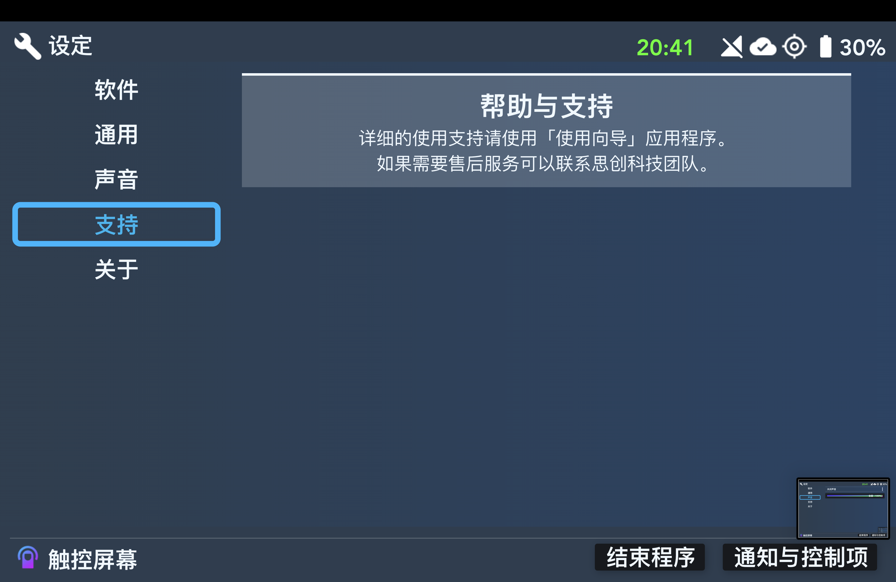
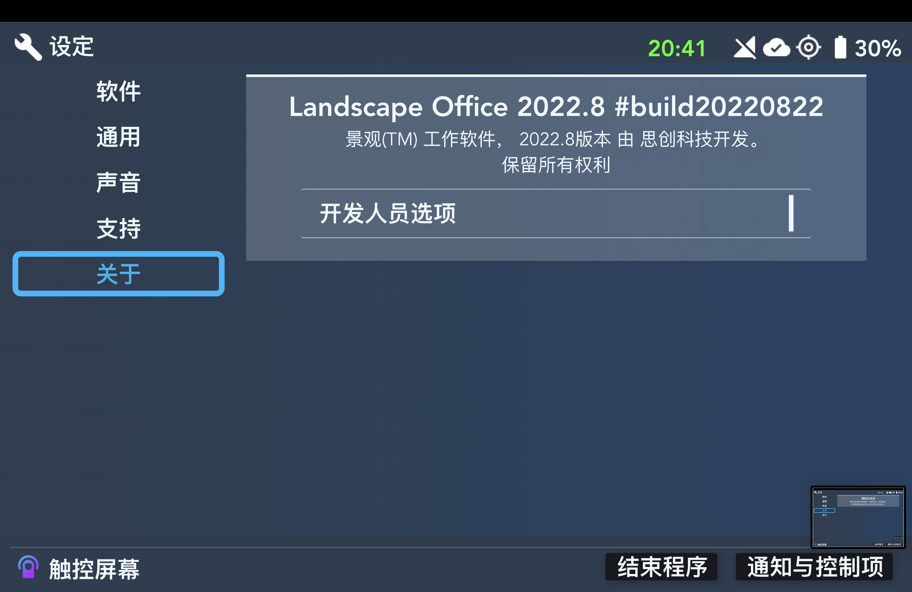
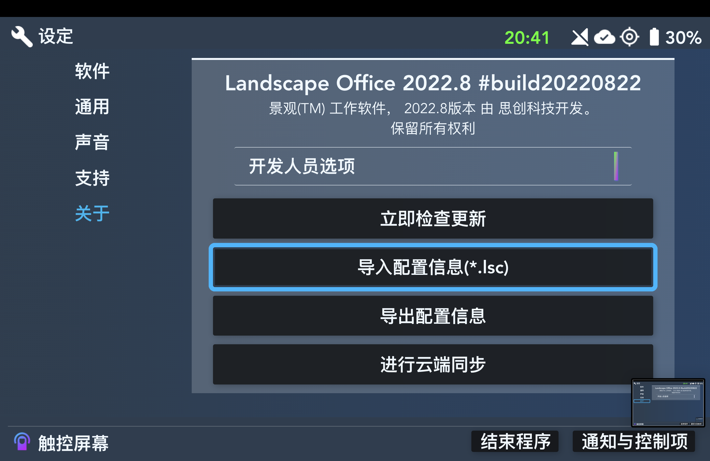

设定 - 选项

设定应用程序软件画面
【自动检查更新】 - 是否自动检查更新

设定应用程序通用画面
【暗主题】 - 是否使用暗主题
【震动反馈】 - 是否提供震动反馈
【允许远程开机】 - 是否允许手机端app远程启动您的挖掘机
【定位服务】 - 是否允许定位服务
【连接网络】 - 是否允许Landscape Office连接网络
【思创科技云服务】 - 是否使用思创科技云服务来备份您的设置

设定应用程序声音画面
【关闭声音】 - 是否静音
【音量滑条】 - 改变音量大小

设定应用程序支持画面
Landscape Office支持信息

设定应用程序关于画面
Landscape Office软件信息

设定应用程序打开了开发者选项的关于画面
【立即检查更新】- 立刻检查更新
【导入配置信息（*.lsc）】- 导入lsc文件
【导出配置信息】- 导出配置为lsc文职
【进行云端同步】- 立刻与思创科技服务器同步